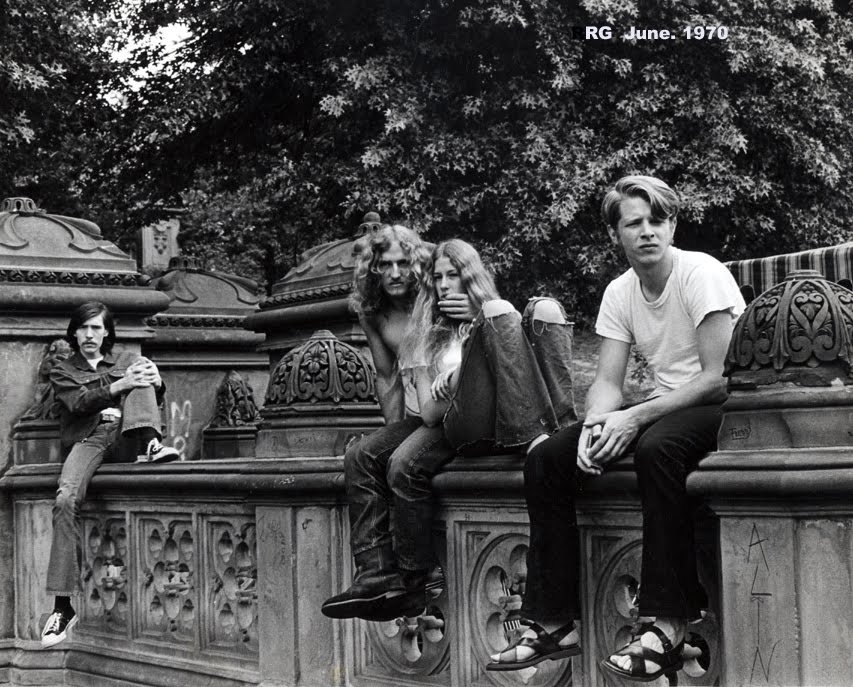
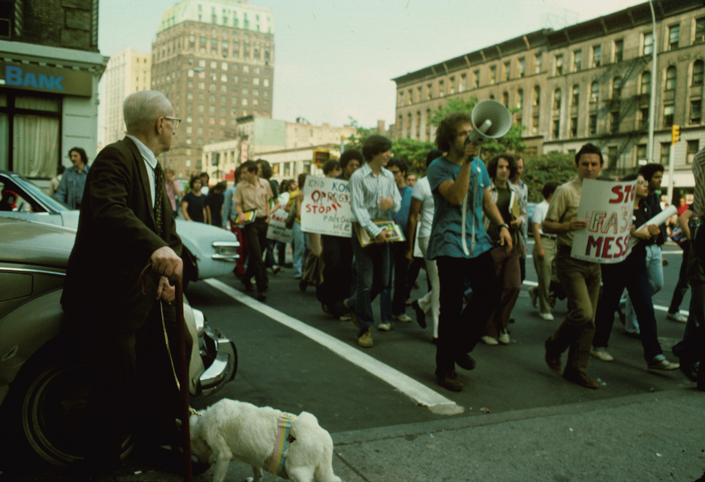
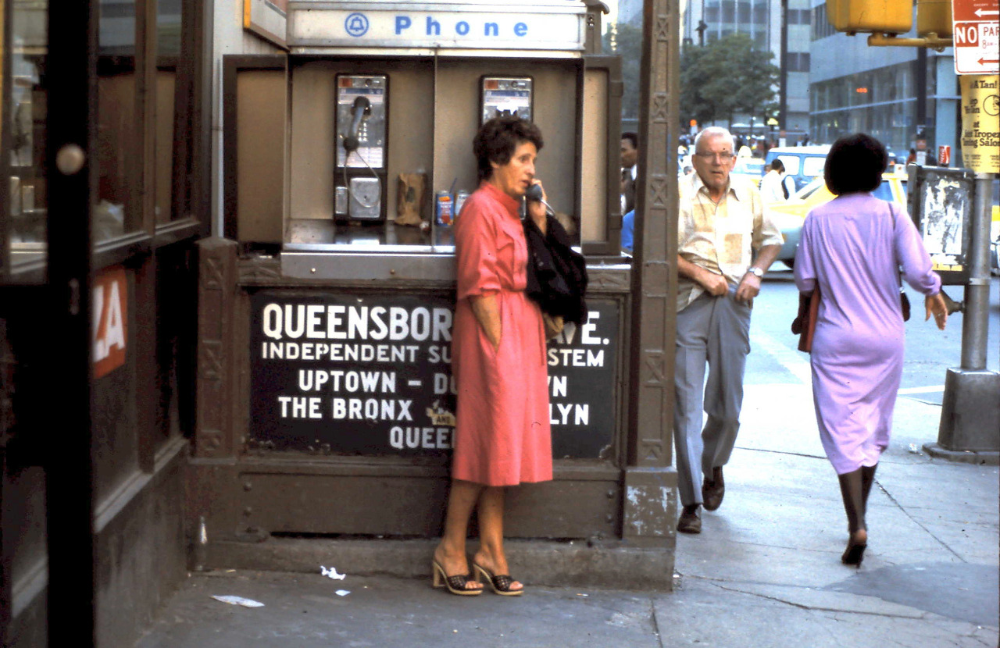

Get off my lawn! Folks at the great Be-In in Central Park, 1967.
Get off my lawn! Folks at the great Be-In in Central Park, 1967.

Bill Rauhauser. Untitled (New York City), ca. 1970.

6th Ave and 52nd St., 1961

The Deuce, 1983
Canal Jeans and Pearl Paint, 1977. Where you got your graffiti supplies and cheap ass clothes.
Memories…
NYC skyline, 1972
Lunch Wagon on West Street, 1972

Cabbie on Park Ave, 1982

Midtown, 1980

Riding a horse the wrong direction down a one-way street. 1976, off Columbus Ave.

Oh yeah

Super Mart on W. 85th, 1986

J Train at 168th Street and Jamaica Avenue in Queens, 1975.
Oh damn, just noticed! 45k followers! Thanks all. Glad you’re enjoying the nostalgic ride!

Train in the Coney Island Yard, 1984

Dudes peeing on a construction site?

Bruce Gilden, NYC, 1979
WIlliamsburg Bridge, 1976
Movie listings from 1970

The “Majestic” theater on Fulton Street, 1980

Subway ride, 1981

Brooklyn 1979
9th Ave and 34th St, looking at the Empire State Building

NYC taxi, 1971

Summertime and the livin’ is easy. Central Park, 1970.

“Stay away from my dog, hippies!”
Protesting something, 1980, 102nd & Broadway.

What the hell was he just doing???

Linda Hotel, Park Ave and 125th Street, Harlem, 1970s
Subway entrance at the northwest corner of 86th and Broadway, looking east, 1988